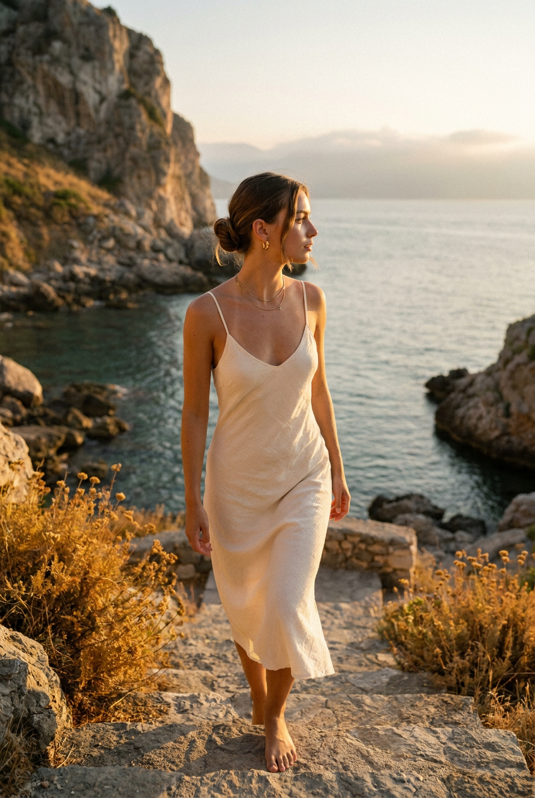
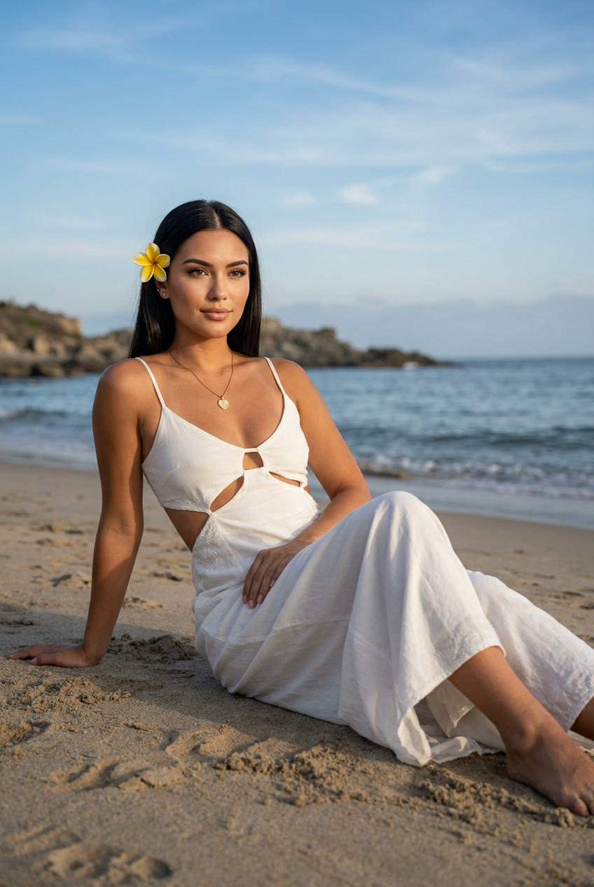
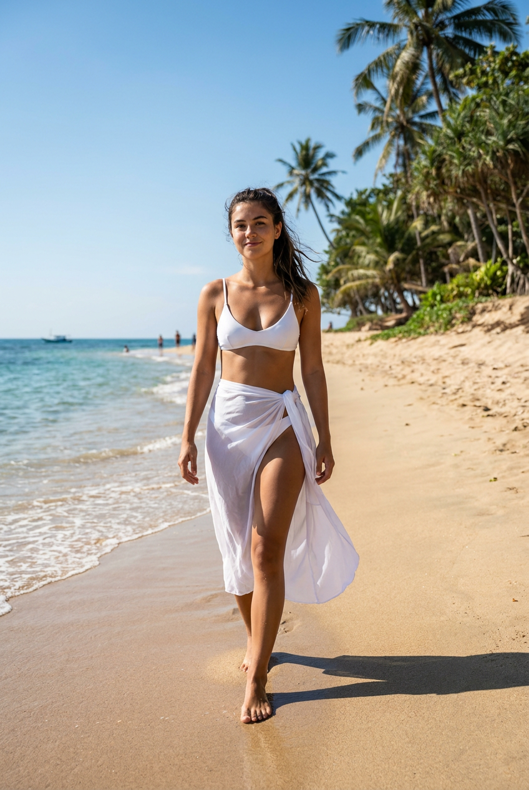
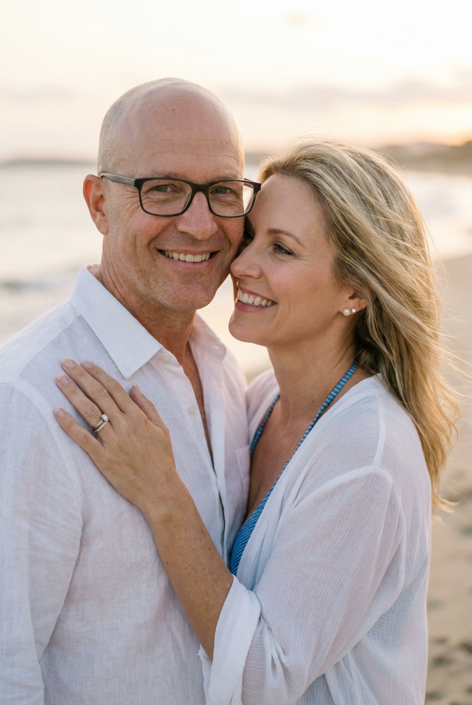
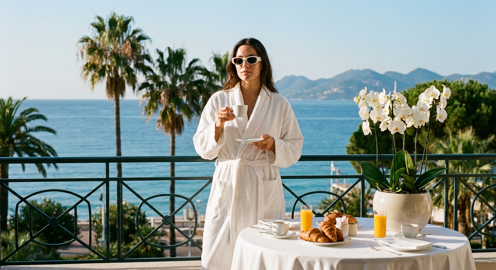
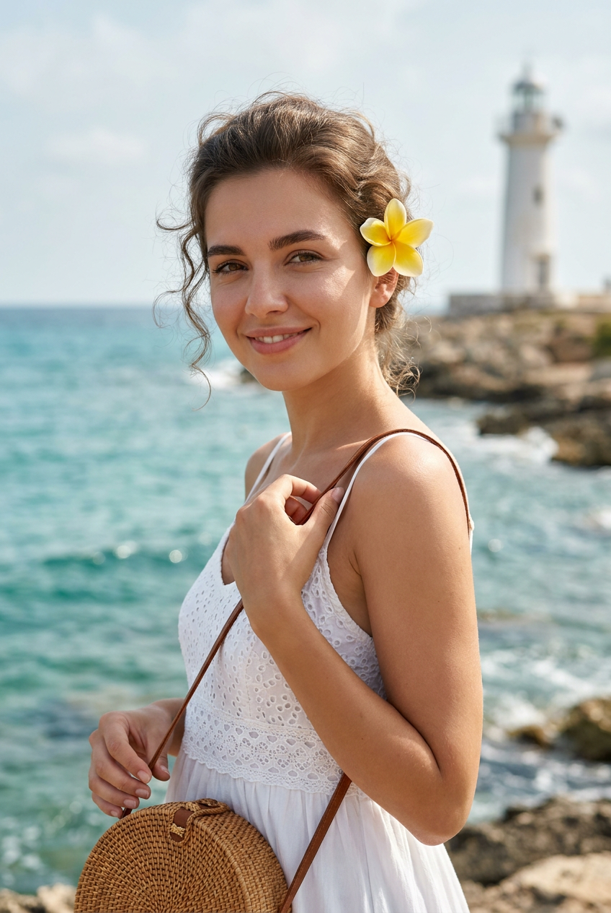
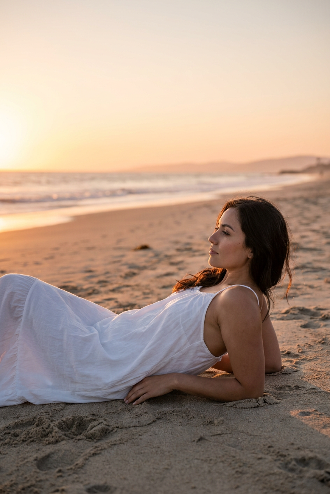
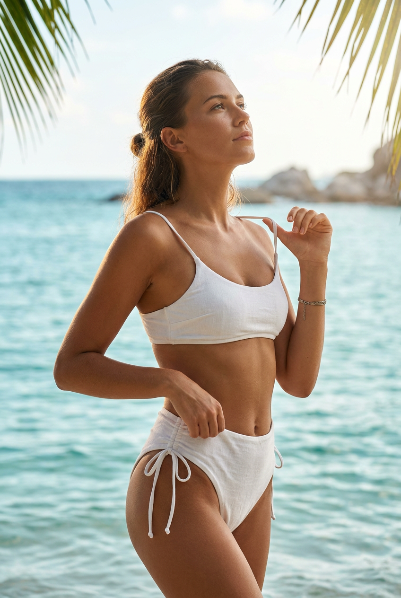
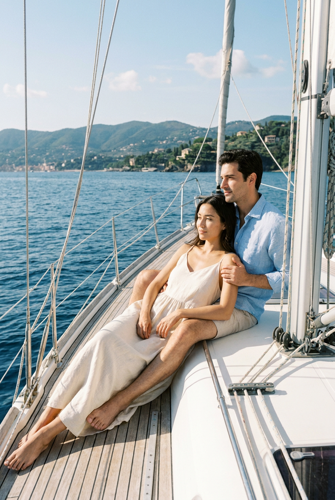

ИИ-фотосессия на море: 9 промптов для нейросети

Красивые снимки у моря обычно требуют поездки, удачного света и фотографа, который поймает естественную позу. Генерация помогает собрать такую фотосессию дома: достаточно загрузить референс лица и точно описать сцену.
В подборке — девять сценариев для разных настроений: прогулка у воды, портрет со скалами, лежание на песке, кадр в купальнике, съёмка пары и утро на террасе отеля. Промпты можно копировать целиком или адаптировать под свою внешность и одежду.
Как сгенерировать такое фото: пошагово
Нужен снимок анфас при ровном свете, лицо в кадре целиком, без тёмных очков и головных уборов. Разрешение от 1000 пикселей по короткой стороне. Чем чётче исходник, тем точнее модель повторит черты.
Выберите сценарий ниже и нажмите «Копировать» — текст уйдёт в буфер целиком, вместе с командой сохранения внешности. Эта команда стоит первой строкой и отвечает за то, чтобы на выходе было ваше лицо, а не случайное.
Кнопка «Сгенерировать» рядом с каждым промптом открывает модель в новой вкладке. Nano Banana Pro работает с референсом лица — в отличие от моделей, которые генерируют портрет с нуля и узнаваемость теряют.
Промпт — в поле ввода, портрет — через загрузку референса. Порядок значения не имеет, но без референса команда сохранения внешности работать не будет: модели нечего сохранять.
Для сторис и ленты берите 9:16, для превью и обложек — 4:3. Первый результат редко идеален: если поза или свет ушли не туда, поправьте соответствующую часть промпта и запустите заново. Обычно хватает двух-трёх итераций.
9 промптов для генерации
1. Прогулка к воде
Строго сохранить внешность по загруженному референсу: черты лица, пропорции, мимику и текстуру кожи без изменений. Вертикальный фотореалистичный кинематографичный кадр на живописном морском берегу со скалами и водой в золотой час перед закатом. В центре композиции молодая женщина спускается к воде по деревянным или каменным ступеням-плитам и занимает большую часть кадра. Она идёт вперёд спокойным уверенным шагом, корпус развёрнут на три четверти, плечи расслаблены. Голова повернута вправо, взгляд устремлён вдаль вдоль береговой линии. Одна рука находится немного впереди вдоль тела, вторая ближе к корпусу, пальцы свободные. Волосы слегка подхватывает ветер, отдельные пряди выбились у лица, в позе ощущается естественная динамика движения. Реалистичная кожа, натуральная мимика, точные пропорции, мягкий тёплый контровой свет, высокая детализация, объектив 50 мм, малая глубина резкости.
2. На песке у моря

Строго сохранить внешность по загруженному референсу: черты лица, пропорции, мимику и текстуру кожи без изменений. Вертикальный фотореалистичный портрет на тихом пляже с песчаным берегом и невысокими скалистыми участками по краям. Молодая девушка сидит или полулежит на песке, её корпус развёрнут к камере на три четверти. Одна рука мягко поддерживает тело сзади или лежит рядом с корпусом, вторая свободно вытянута вдоль тела. Ноги направлены в сторону кадра: одна может быть слегка согнута, чтобы линия позы выглядела естественно. Лицо показано в лёгком ракурсе, взгляд направлен к горизонту либо в объектив, выражение спокойное и уверенное, губы расслаблены, заметна едва уловимая нейтральная полуулыбка. Волосы гладкие, блестящие, с центральным пробором; в них заметен жёлтый цветок. Натуральная кожа, мягкий дневной свет, реалистичная анатомия, 85 мм, вертикальный формат.
3. Шаг по кромке прибоя

Строго сохранить внешность по загруженному референсу: черты лица, пропорции, мимику и текстуру кожи без изменений. Снимок в полный рост, вертикальная композиция, фотореалистичный кинематографичный стиль. Яркий солнечный день на тропическом пляже Карибского моря или восточно-азиатского побережья. Девушка идёт по границе воды и светлого мелкого песка, снята сбоку на три четверти: корпус слегка повёрнут к камере, одна нога делает шаг вперёд, стопы естественно касаются песка, без анатомических искажений. Лицо расслабленное, на нём уверенная лёгкая улыбка, взгляд направлен в объектив или немного мимо него. Волосы имеют натуральную текстуру, в них играют солнечные блики, несколько прядей развеваются. Кожа слегка загорелая, с видимой реалистичной текстурой, без пластикового эффекта. Мягкие тени, прозрачный морской воздух, естественная цветопередача, объектив 35 мм, высокая детализация.
4. На влажном песке

Строго сохранить внешность по загруженному референсу: черты лица, пропорции, мимику и текстуру кожи без изменений. Вертикальная фотореалистичная кинематографичная сцена на морском пляже вечером. Тёплый мягкий свет заката, спокойное романтичное настроение, влажный песок у самой линии прибоя. Молодая женщина лежит по диагонали кадра в расслабленной художественной позе: корпус немного развёрнут вверх, одна нога согнута в колене, вторая вытянута свободнее, руки раскинуты над головой. Поза пластичная, естественная и эстетичная, без напряжения. Голова слегка повёрнута в сторону, глаза закрыты или полуприкрыты, выражение умиротворённое, будто женщина слушает шум волн и наслаждается тёплым воздухом. На ней лёгкое белое платье, ткань мягко ложится по фигуре и слегка касается влажного песка. Тёплые блики на коже, деликатные тени, реалистичная текстура ткани, объектив 50 мм, высокая детализация.
5. Портрет пары у моря

Строго сохранить внешность по загруженному референсу: черты лица, пропорции, мимику и текстуру кожи без изменений. Фотореалистичный outdoor-портрет пары у моря, вертикальный или близкий к портретному формат, люди в кадре по грудь или по плечи. Съёмка днём либо на закате при мягком тёплом свете. На заднем плане песчаный берег, вода и далёкая линия горизонта, морской пейзаж размыт в боке; светлое слегка выцветшее небо и мягкая дымка у горизонта. Мужчина слева, ближе к переднему плану: 45–65 лет, светлая кожа, короткая стрижка или почти лысая голова, тёмная оправа очков, доброжелательная улыбка и спокойный взгляд в объектив. На нём белая льняная рубашка с открытым воротом, часть пуговиц расстёгнута, ткань дышит и слегка помята в дорогом расслабленном стиле. Женщина справа, чуть ближе к центру: 35–60 лет, светлая кожа, светлые волосы, отдельные пряди развевает ветер. Тёплая пастельная цветокоррекция, естественная кожа, летняя атмосфера, объектив 85 мм.
6. Утро в отеле

Строго сохранить внешность по загруженному референсу: черты лица, пропорции, мимику и текстуру кожи без изменений. Фотореалистичное lifestyle-фото в стиле luxury editorial: человек стоит на террасе дорогого отеля у моря ранним утром. За спиной — лазурная вода, пальмы и горы вдали, свет мягкий, дневной, с естественными тенями. На модели лёгкий белый халат с поясом и белые солнцезащитные очки; в одной руке маленькая белая чашка, в другой блюдце. Перед моделью круглый стол с белой скатертью, круассаны, чашки кофе, стакан апельсинового сока и большой горшок с белыми орхидеями. Атмосфера спокойной роскоши, отпускного утра и свежего морского воздуха. Композиция как в модном журнале, чистый фон, натуральные волосы, реалистичная кожа, тёплый film look, премиальная рекламная съёмка, объектив 35 мм, малая глубина резкости, высокая детализация, ultra realistic.
7. Улыбка среди скал

Строго сохранить внешность по загруженному референсу: черты лица, пропорции, мимику и текстуру кожи без изменений. Вертикальный крупный фотореалистичный портрет лица и верхней части тела на фоне моря и скалистого берега. Девушка стоит к камере под углом три четверти, смотрит прямо в объектив и мягко улыбается. Настроение радостное, спокойное и солнечное. Кожа сияет в естественном свете, видны настоящая текстура, поры и мягкие тени; макияж аккуратный, без эффекта пластика, брови естественные. Волосы объёмные у корней, у лица выбились отдельные завитки, по прядям проходит солнечный блик. В волосах закреплён жёлтый цветок франжипани или плюмерия: его лепестки должны быть чёткими и не искажёнными. Белая летняя одежда, лёгкий морской ветер, натуральная цветопередача, мягкий фон с расфокусированными скалами, объектив 85 мм, высокая детализация.
8. Рассветная поза на пляже

Строго сохранить внешность по загруженному референсу: черты лица, пропорции, мимику и текстуру кожи без изменений. Вертикальный кинематографичный фотореалистичный кадр на пляже у моря во время заката. Вдали тёплая линия горизонта, спокойная гладь воды с небольшими волнами и длинная береговая линия, уходящая в перспективу. На переднем плане светлый песок с мелкой зернистой текстурой и естественными неровностями. Женщина лежит в нижней центральной части кадра, немного правее, в расслабленной художественной позе: колени согнуты и подняты, корпус поддержан локтями или предплечьями, голова опирается на руки либо слегка запрокинута. Взгляд направлен к морю, вверх или в сторону заката, глаза полуприкрыты, выражение лица спокойное и умиротворённое. Тёплые мягкие блики, натуральная кожа, естественная анатомия, воздушная перспектива, объектив 50 мм, вертикальный формат.
9. Солнечный кадр в купальнике

Строго сохранить внешность по загруженному референсу: черты лица, пропорции, мимику и текстуру кожи без изменений. Вертикальная фотореалистичная кинематографичная съёмка на тропическом пляже в яркий солнечный день. В центре кадра молодая взрослая женщина стоит в эффектной, но естественной позе, корпус развёрнут к камере на три четверти. Голова поднята вверх и немного повернута в сторону, взгляд направлен наверх или вдаль, выражение спокойное и уверенное. Одна рука согнута у груди или талии, вторая поднята и удерживает тонкий ремешок купальника в верхней части тела, локти и кисти анатомически корректны. Волосы частично собраны назад, несколько прядей выбились и блестят на солнце. Кожа имеет реалистичную текстуру, видны естественные поры и мягкие солнечные тени. Светлый песок, лазурная вода, чистое небо, натуральная цветопередача, объектив 50 мм, высокая детализация.
Что важно учесть в этом стиле
Морская фотосессия держится на свете и направлении взгляда. Для заката указывайте тёплую подсветку сбоку или сзади, а для дневного кадра — жёсткие солнечные блики, мягкие тени и естественную текстуру кожи. Если нужен дорогой журнальный вид, добавьте конкретную оптику: 35 мм для пространства, 50 мм для универсального кадра, 85 мм для портрета.
Поза должна быть описана через положение корпуса, рук, ног и головы. Формулировка «красивая девушка на пляже» оставляет нейросети слишком много свободы: она может исказить кисти, стопы и линию плеч. Референс лица лучше сопровождать указанием не менять узнаваемые черты, мимику и пропорции.
Идеи для вариаций
- Замените закат на пасмурное утро с серебристой водой и холодной цветокоррекцией.
- Добавьте лёгкую льняную рубашку поверх купальника, плетёную сумку или широкополую соломенную шляпу.
- Перенесите сцену на чёрный вулканический пляж, деревянный пирс или бухту с бирюзовой водой.
- Попросите кадр с мокрыми волосами после купания и каплями воды на коже.
- Для серии используйте одну оптику, одинаковое соотношение сторон и три варианта взгляда: в камеру, на горизонт и вниз.
Как собрать свой промпт
Сначала задайте формат и тип съёмки: вертикальный портрет, полный рост или кадр по грудь. Затем опишите место, время суток и состояние воды. После этого разложите позу на отдельные элементы: куда направлены корпус, голова, руки, ноги и взгляд.
В финале добавьте одежду, фактуру кожи, поведение волос, свет и технические параметры. Для стабильного результата сделайте 3–5 генераций с одной сценой, меняя только позу или направление взгляда. Негативные ограничения можно вынести отдельно: лишние пальцы, деформированные кисти, пластиковая кожа, смазанные черты лица, неправильная анатомия.
Ошибки, из-за которых кадр не получается
- Слишком общий запрос. Фразы вроде «роскошное фото у моря» не задают ни позу, ни композицию, ни свет.
- Несовместимое освещение. Закатный контровой свет и яркое полуденное солнце в одном описании дают грязные тени и странные блики.
- Перегруженная сцена. Чем больше предметов и персонажей, тем выше риск потерять лицо и детали одежды.
- Неуточнённая анатомия. Для лежащих и движущихся поз отдельно описывайте колени, локти, кисти и стопы.
- Нет контроля над лицом. Без референса или указания сохранить индивидуальные черты результат может выглядеть как другой человек.
Частые вопросы
Как сделать такое ИИ-фото бесплатно?
Можно попробовать Kandinsky и Шедеврум: они подходят для текстовой генерации и обычно проще для старта, но точность лица по референсу и количество доступных попыток могут быть ограничены. Krea AI и Arena.ai дают больше инструментов для работы с изображением и вариациями, однако поддержка референса, качество результата и доступные функции зависят от конкретного режима. Бесплатная генерация не гарантирует точного сходства, поэтому иногда понадобится несколько попыток и ручной отбор.
Как сохранить сходство с лицом на референсе?
Загружайте чёткий портрет без сильных фильтров, очков и перекрывающих лицо волос. В промпте отдельно укажите форму лица, глаза, нос, губы, тон кожи и естественную мимику, а также запрет на изменение узнаваемых черт. Для сложных поз сначала добейтесь правильного лица в простом портрете, затем переносите его в сцену.
Как избежать лишних пальцев и странных поз?
Описывайте положение каждой конечности простыми фразами: одна рука вдоль тела, вторая согнута у талии, одна нога делает шаг. Добавляйте ограничения «естественная анатомия», «пять пальцев», «корректные кисти и стопы», «без деформаций». Если модель всё равно ошибается, упростите позу и сделайте несколько вариантов.
Какой формат выбрать для фотосессии на море?
Для публикаций и сторис подойдёт вертикальный формат 4:5 или 9:16. Соотношение 4:5 лучше сохраняет фигуру и пейзаж в одном кадре, а 9:16 оставляет больше воздуха сверху и снизу. Для портрета используйте 85 мм и малую глубину резкости, для прогулки по берегу — 35 или 50 мм, чтобы показать пространство.